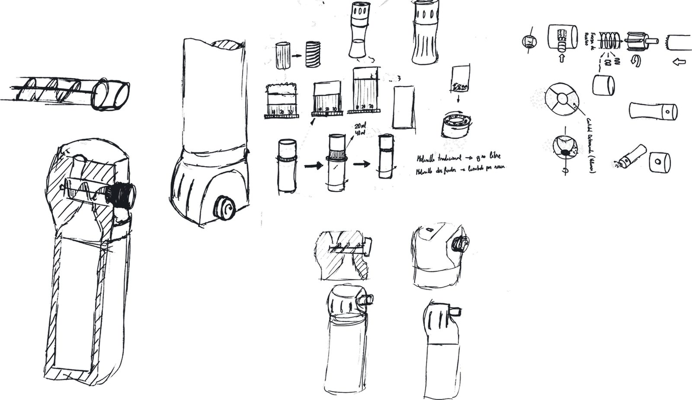
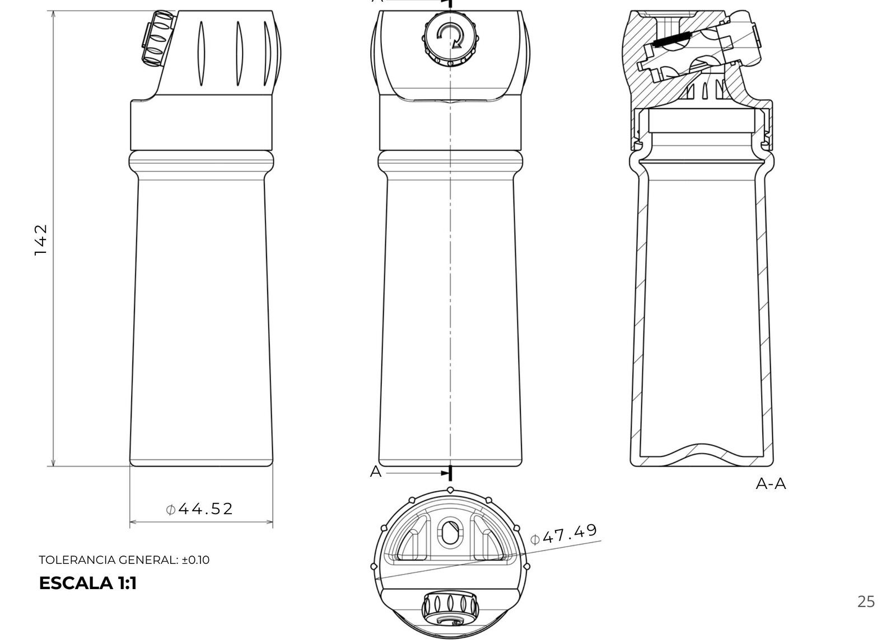
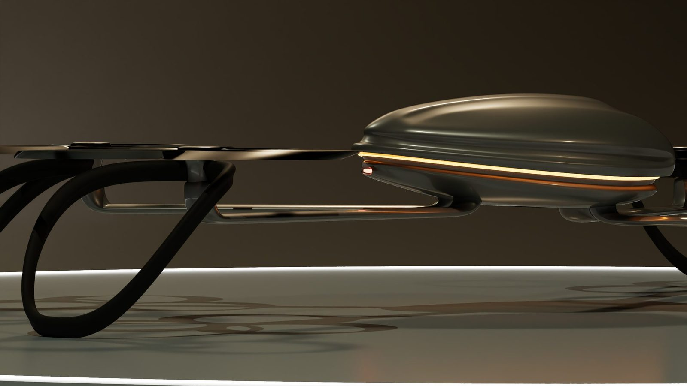

Óscar Ramón Mendiguchía. Ingeniero de producto: diseño piezas que se pueden fabricar y las imprimo para probarlas.
Ver proyectosSeis piezas llevadas del boceto al prototipo. Cada una se imprime capa a capa al llegar a ella.
El mismo recorrido en cada pieza: el boceto plantea el mecanismo, el plano lo hace fabricable y el prototipo demuestra que funciona.


Ingeniero en formación constante con perfil técnico híbrido. Combino diseño paramétrico, optimización topológica y fabricación propia.
Especializado en mecanismos, con enfoque estricto en GD&T y DFM/DFA. Curso 4.º de Ingeniería en Diseño Industrial y Desarrollo de Producto en la Universidad de Valladolid y publico diagnosis y reparaciones en MendiMekanik.

Óscar Ramón Mendiguchía, ingeniero de producto. Baja y el nombre se abre en piezas: entre ellas pasan mis seis proyectos.
ContactarIngeniero en formación constante con perfil técnico híbrido. Combino diseño paramétrico, optimización topológica y fabricación propia.
Especializado en mecanismos, con enfoque estricto en GD&T y DFM/DFA. Curso 4.º en la Universidad de Valladolid. Trabajo con CATIA V5, Fusion 360, Blender, impresión FDM y SLA, moldeo en silicona y CNC.
Óscar Ramón Mendiguchía, ingeniero de producto. Diseño industrial, DFM, tolerancias y prototipado propio desde la Universidad de Valladolid.
Ver el recorridoMido, modelo, acoto e imprimo. Cada proyecto empieza en un boceto y termina en una pieza que se puede sujetar con la mano.
Ingeniero en formación constante con perfil técnico híbrido. Combino diseño paramétrico, optimización topológica y fabricación propia.
Especializado en mecanismos, con enfoque estricto en GD&T y DFM/DFA. Curso 4.º de Ingeniería en Diseño Industrial y Desarrollo de Producto en la Universidad de Valladolid y publico diagnosis y reparaciones en MendiMekanik.